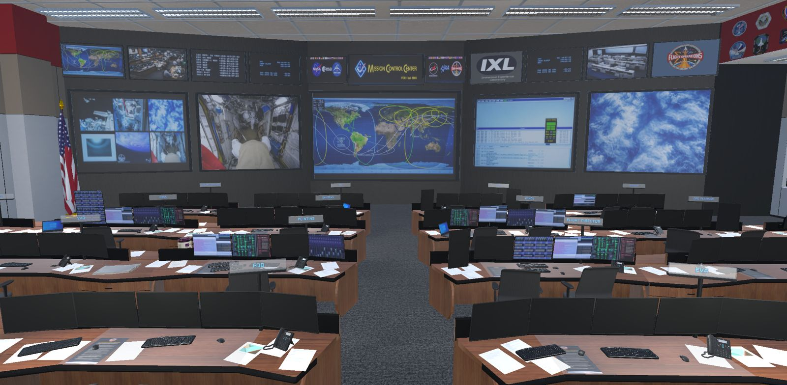
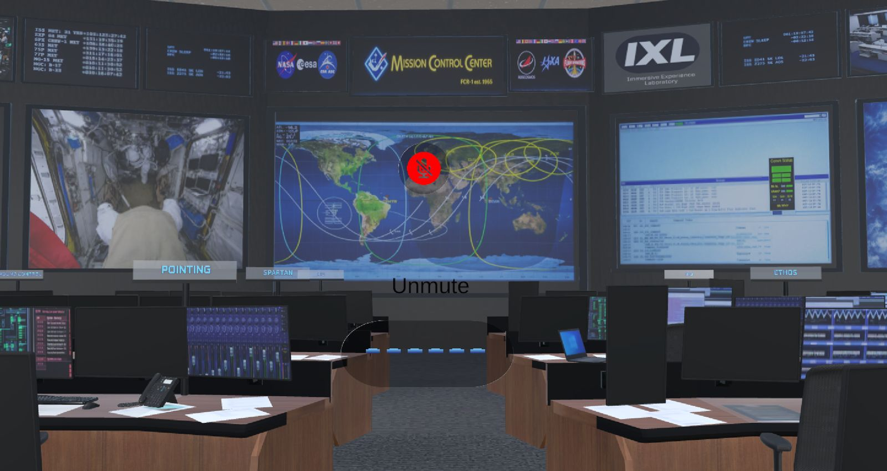

Project · Purdue capstone × Johns Hopkins APL
Mission Control VR + AI Agent
A virtual reality recreation of NASA's Johnson Space Center Mission Control Center with a voice-driven AI agent that answers questions like a real flight controller. The agent's knowledge comes from interviews with human-spaceflight experts. I built the cloud RAG backend that powers it, and co-authored the team's research paper, which is pending publication.

The challenge
Static docs can't capture how Mission Control works
Johns Hopkins APL's design strategists came to us with a problem. Traditional design documentation doesn't capture the complexity of mission-critical systems: who the users are, what pressures they work under, and why the system was designed the way it was. Their challenge to us:
"How might we communicate user needs and design decisions of spatial immersive design deliverables in a way that is interactive, empathetic, and enduring?"
Our answer was a proof of concept. Instead of reading a document, a stakeholder puts on a VR headset, stands inside Mission Control, and asks an AI agent what a flight controller actually does, how they make decisions, or what happens in an emergency.
Full scope
What the team built
Expert research
We contacted 28 experts through APL, NASA JSC, and Barrios Technology, and ran 11 in-depth interviews with astronauts, flight directors, flight controllers (EVA, ETHOS, CAPCOM), an increment engineer, and UX designers. An affinity diagram sorted the insights into communication, decision-making, conflict resolution, training, and visibility.
VR Mission Control
A to-scale Unity recreation of the JSC Mission Control Center, with consoles arranged to match the real room, front-wall displays, and real NASA mission emblems. It runs on a Meta Quest 3 (standalone or tethered) and on desktop, and users teleport between consoles.
Voice AI agent
Users talk to the agent naturally. Speech is transcribed with OpenAI's Whisper, answered by the RAG backend from the expert knowledge base, and spoken back with ElevenLabs text-to-speech. NASA's "Rules of Human Spaceflight" (crew, then vehicle, then mission) are built into its system prompt.
User testing
Three experts returned to test the prototype: a flight controller, an increment engineer, and a flight dynamics officer. They checked the room's layout for accuracy and questioned the agent to look for made-up answers.
Public questionnaire
34 students, faculty, and professionals watched a demo of the agent and wrote the questions they'd ask it. That showed us where the knowledge base had gaps.
Research paper & presentation
A research paper co-authored with our APL mentors (publication pending), "Exploring a Virtual Reality Representation of the Mission Control Center with an Intelligent Virtual Agent for NASA's Space Operations," plus a recorded presentation and an open-source GitHub repo.
What I did
My contributions
I joined the team as the Data Analyst, the only data-focused member alongside UX, game development, and XR specialists. I ended up owning the AI's backend end to end.
Designed and deployed the RAG server on AWS
I launched and configured an Ubuntu EC2 instance and set up the network rules for SSH and the API port. On it I built a Python FastAPI service that sits between Unity and OpenAI, so the VR app never talks to OpenAI directly.
Built the API the VR app calls
GET / is a health check, and POST /ask takes a user's question. It validates the input and runs the OpenAI Responses API (GPT-4.1 nano) with a file-search tool over our vector store. It returns a grounded answer, with typed request and response models (Pydantic) and clear error handling.
Built the knowledge base pipeline
I wrote upload_pdfs.py to batch-load research and interview PDFs into an OpenAI vector store, which splits them into chunks and embeds them automatically. We organized the PDFs by Mission Control position, with subsections for leadership, decision-making, and communication. That structure made the agent sound like someone who actually works in MCC instead of a generic chatbot.
Secured the secrets
The OpenAI API key lives encrypted in AWS Systems Manager Parameter Store as a SecureString. It's read at startup through an IAM role attached to the instance (least-privilege, read-only access to parameters). Nothing sensitive is in the code or on disk.
Kept it running 24/7
I ran the API with Uvicorn under a systemd service that auto-starts on boot and restarts on failure. Teammates could demo and test anytime without anyone starting the server by hand.
Onboarded the team and documented the system
I wrote the team's RAG/AWS runbook and SSH access guides for Mac and Windows, and set up individual server accounts so teammates could add to the knowledge base on their own. I co-authored the research paper and wrote its RAG pipeline and AWS server architecture sections.
Analyzed the public questionnaire
I cleaned the survey responses and analyzed them in Python (Google Colab), categorizing the free-text questions people wanted to ask the agent. The results, summarized below, guided which topics we expanded in the knowledge base.
Architecture
How a question gets answered
The core of server.py, the endpoint Unity calls:
# Key pulled from AWS Parameter Store at startup: never in code client = OpenAI(api_key=get_openai_key()) @app.post("/ask", response_model=Answer) def ask_ai(data: Question): if not data.question.strip(): raise HTTPException(status_code=400, detail="Question cannot be empty") try: response = client.responses.create( model="gpt-4.1-nano", input=data.question, tools=[{"type": "file_search", "vector_store_ids": [VECTOR_STORE_ID]}], ) return Answer(answer=response.output_text) except Exception: logging.exception("OpenAI request failed") raise HTTPException(status_code=500, detail="AI service failed")
Engineering decisions
Why it's built this way
RAG instead of a plain chatbot
A general language model knows little about day-to-day life in Mission Control, and what it does know can be wrong or out of date. Retrieval grounds every answer in our own expert interviews and training material, and the knowledge base can be updated by uploading a PDF, with no retraining.
A server in the middle
Routing Unity → AWS → OpenAI keeps the API key off every headset and laptop. It also means one place to update prompts or knowledge, and each piece can be debugged on its own.
Parameter Store + IAM over .env files
With seven people sharing one server, a plaintext key file was a real leak risk. An encrypted SecureString behind a read-only IAM role meant nobody needed to see or handle the key.
Small, cheap, always on
A t3.micro instance and OpenAI's smallest GPT-4.1 model kept costs low and answers fast, about 4–5 seconds from spoken question to spoken reply. systemd made it dependable for demos with no manual steps.
Data analysis
What people wanted to ask the agent
Question categories
n = 34 respondents · 55 tallies across 8 categories (a question can fall into more than one)
What it told us
- 77.8% of respondents were undergraduates; the rest were graduate students and industry professionals.
- The top three categories (operations, emergencies, and who's responsible for what) accounted for 39 of 55 tallies, about 71%.
- Almost nobody asked about the AI itself (2 tallies). People wanted to learn Mission Control, not the technology.
- We added more knowledge-base content on the top three topics as a result.
Evaluation
How it performed
● What worked
- Experts called the experience "amazing," saying it exceeded their expectations.
- Knowledge questions were strong. Asked what the Increment Management Center is, the agent gave an answer an expert called "very well summarized."
- Voice round trip averaged 4–5 seconds, and it ran smoothly on desktop and on the Quest 3.
● What we'd improve
- Situational questions got "the gist" but missed back-end planning details, so the agent needs deeper scenario reasoning.
- One answer expanded ADCO as "Altitude Determination and Control Officer" instead of Attitude. It's fixable in the vector store, but it shows why AI output stays decision support that needs human oversight.
- Next steps from the paper: lower latency, a broader knowledge base, and an "inspector" agent to catch errors.

Skills used